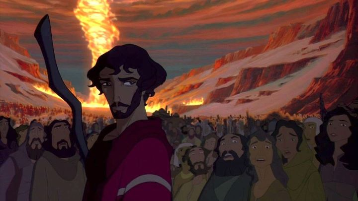

For nearly a century, Walt Disney Studios has dominated the American animation market. There was a period in the mid to late 1900's when they struggled a bit, and a handful of experimental renegade directors tried their luck in the 70's and 80's, but Disney became prominent again during their "renaissance" in the late 80's and 90's. It would be natural that their newfound success would warrent greater competition in Hollywood, leading to a time when children could look forward to three to five 2D animated films a year. Warner Bros and Dreamworks were the larger of Disney's competitors.The Dreamworks animation division was an entirely new team, lead by founders Steven Spielburg and Jeffrey Katzenberg, with the goal of creating films both children and adults could appreciate. They would create four 2D animated films, and later dedicate themselves entirely to computer animation after the blockbuster success of the "Shrek" franchise. But their first film, "The Prince of Egypt," was a special achievement, attempting to tell the biblical story of Moses up to the Ten Commandments, as a grand and epic film above what kiddy-fodder existed in cartoons, as well as a technical marvel combining 2D and 3D animation in a new and exciting way. That whole "film for adults" thing turned out to be more of a marketing ploy than anything. The movie is a musical with the humor and cartoonish side characters (see the con-magicians Hotep and Huy) you would expect for a Disney film. But even with its wholesome Christian-American history, Disney would never tackle a story from the Bible for a mass audience. For better or for worse, that is an impressive feat that "The Prince of Egypt" accomplishes. Much like the opening disclaimer explains, while much creative liberty was taken to make this a fun movie for all audiences, the core of the original story and its meaning remains, making this an easy-to-swallow film even for the non-devout. And if you are Christian, this is a classic movie to watch with the family around Easter or Christmas.Moses is the lead, a snarky but well-meaning teenager near the beginning of the film when we seen him as the adopted son of the Pharaoh of Egypt, playing pranks with his brother (and heir to the kingdom), Rameses. But Moses accidently (and seemingly, within a couple days) discovers he was a son of a slave, let free in hopes to escape a slaughter of slave babies led by his adopted father. In emotional turmoil, he escapes Egpyt and makes a new life with a modest camp in Midian, to eventually find the burning bush known as God, and begin his quest back to Egpyt to demand to his brother, now King, to "let my people go."Unlike most animated films, there is a lot of fun between the male characters (and occasionally the female) as they converse in witty banter in good fun. It's like watching teenagers or young adults in a friendly sport, written by older adults who have forgotten what being a teenger is like. But it is fun nonetheless on screen, and drives the tone for "Egpyt" and for most of Dreamworks' other animated movies, as something adults could laugh at while not being inappropriate for children. Otherwise, the movie can also be surprisingly dark: the story does mention the slaughter of slave children, mistreatment of slaves, and God's wrath through the horrible Plagues that ultimately convince Rameses to let the slaves leave in peace. Does the story fit well as a musical? It's a mixed bag of songs, about half of which not being nearly as strong as any of the songs in a Disney movie. But the other half more than make up for it, being powerful themes both in lyrics and melody. "Deliver Us," "River Lullaby" and "Through Heaven's Eyes" are fantastic, making the movie deserving of a stage-play adaptation. The story might be rushed over the course of these 90 minutes, and perhaps a little preachy by the second half, but a crowd-pleaser. The character designs are the most distinct aspect of "The Prince of Egypt," using stylized shapes for the faces and keeping consistency, giving them more weight and presence as if you could walk around them, and making for powerful close-up shots of their eyes. Mixing 2D characters with 3D camera work during action shots make for some great set-pieces, something taken for granted today. It wasn't until I saw the film on Bluray (in 2018, a full two decades after its release) that I noticed the two things: some of the hundreds of background characters during crowd shots are 3D models (a technique that would be reused with greater dependency in Dreamworks' later films, but here is subtle enough to be missed if not looking for it), and the backgrounds in general are painted with great detail while retaining their brush strokes. Those brush strokes make the movie feel like a real painting, and I can't recommend the Bluray more strongly because of it.The voice cast is also strong, utilizing celebrities at a time when few people ever cared about the voices behind the cartoon. Of course, the cast is entirely white-washed with American and English actors, despite all the film's characters being of visibly-clear Egyptian background. But Val Kilmer and Ralph Fiennes can be commended for their brotherly portrayal of their characters, with Val in particular giving a moving performance. As a kid, I had a soft spot for the movies Dreamworks was making, and am disappointed that their 2D animation would only go for four films. Which one is the best? "The Prince of Egypt" is the most artistic, the most majestic, has the best music, and was the most ambitious. It's most certainly the best, and if not offended to sit down to hear a story from Christian faith, it's the easiest to recommend as a powerful classic.
- "Ani" More reviews can be found at : https://2danicritic.github.io/ Previous review: review_The_Plague_Dogs Next review: review_The_Princess_and_the_Pilot